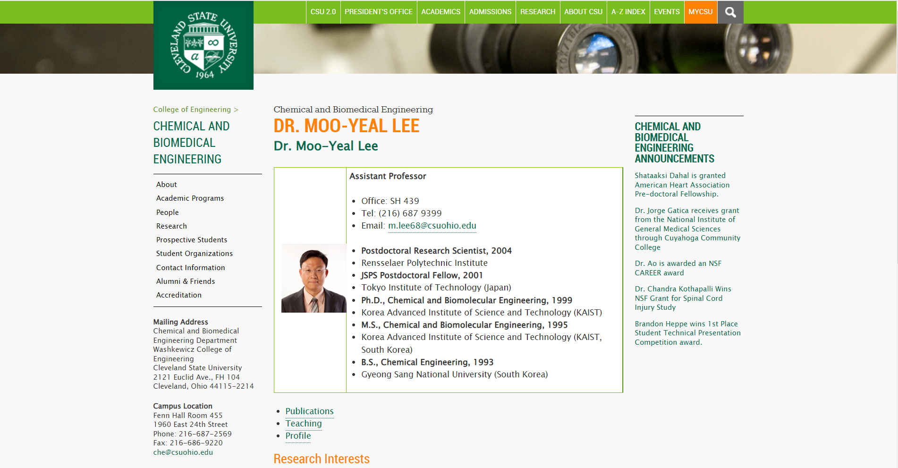
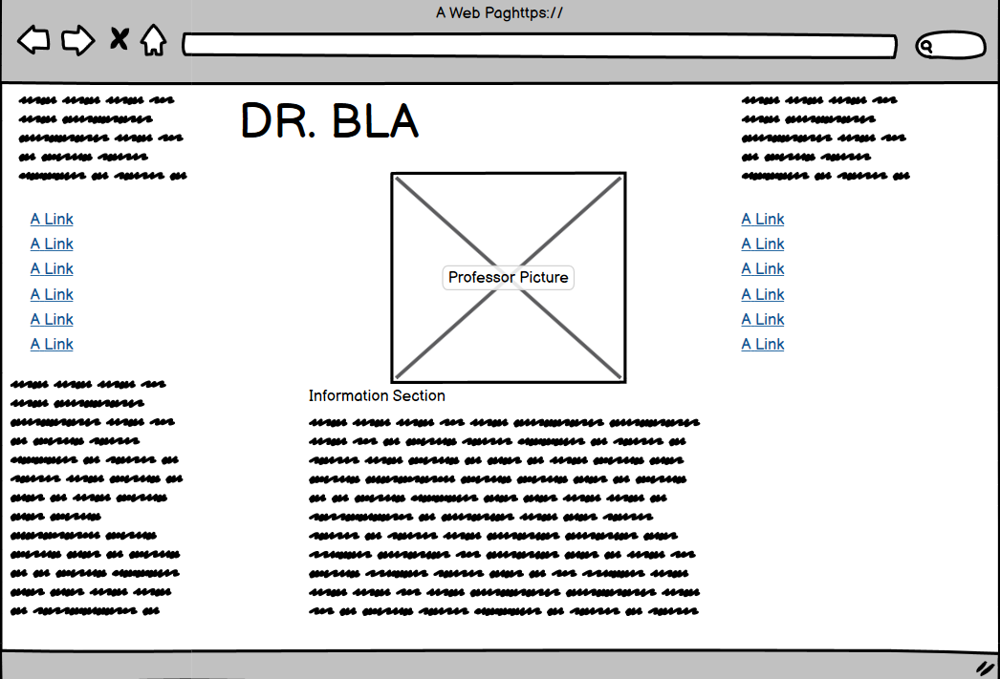
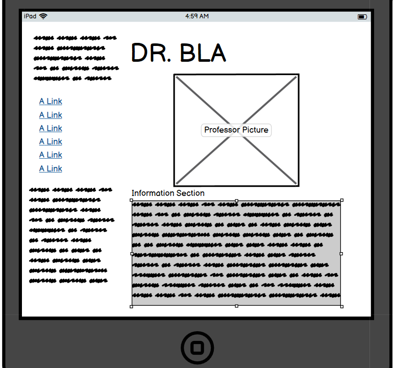
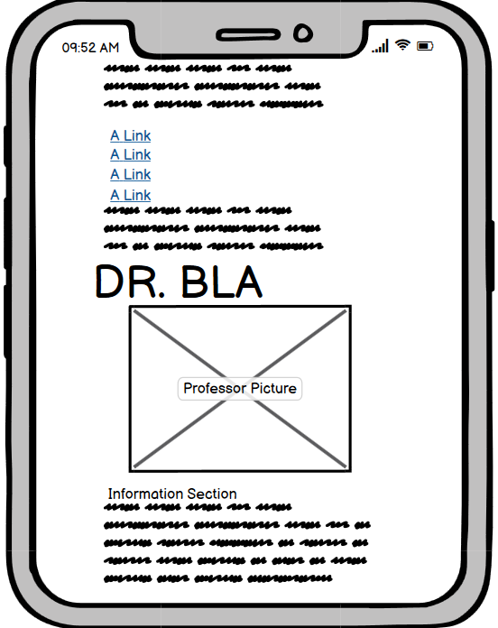
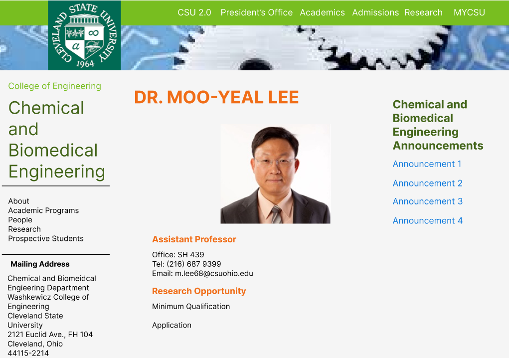
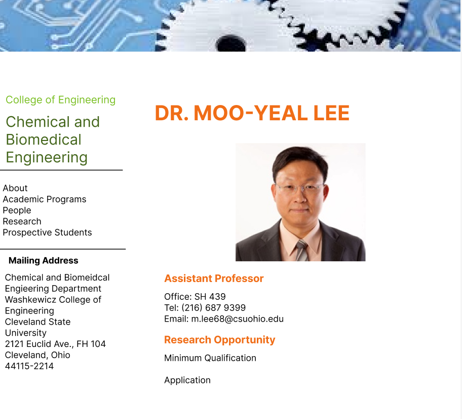
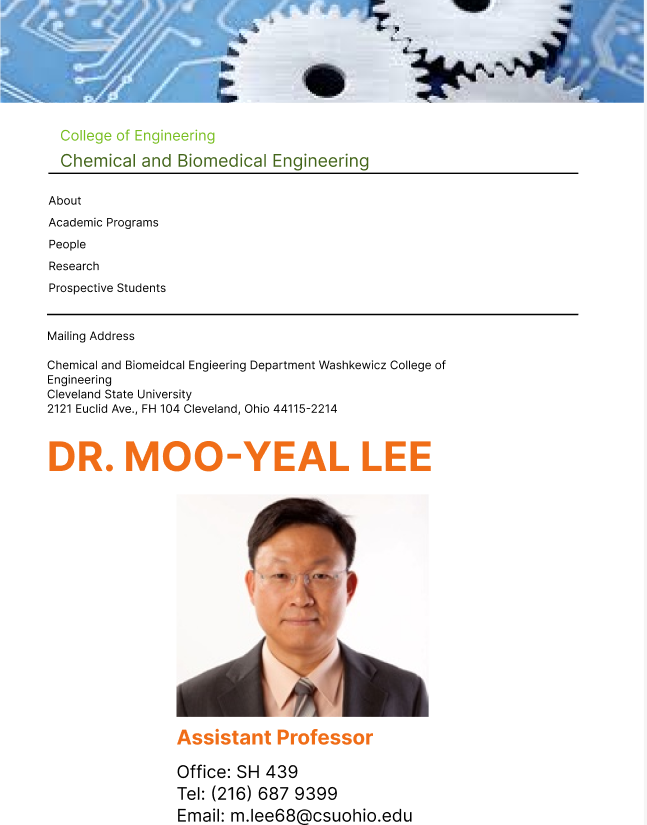
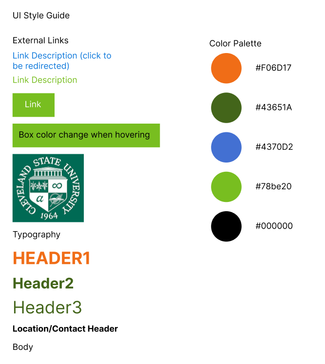
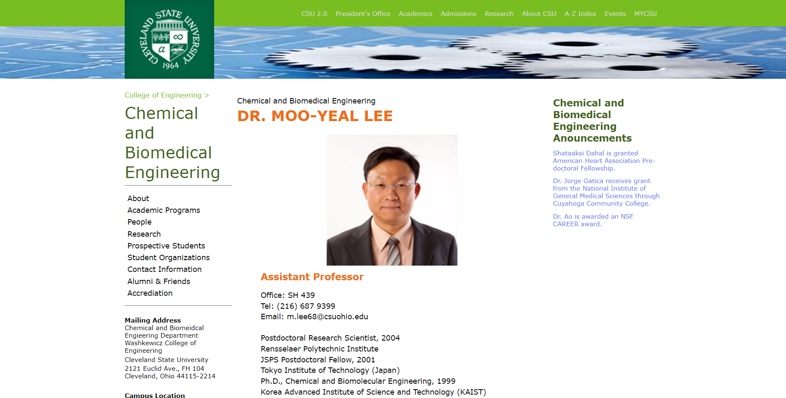

Objective and Overview
The objective of this project is redesigning a poorly developed web page. In order to do that, I will analyze the
the web page using 3 criterias of usuablility, learnability, and memorability and find the problems that prohibit
the users from succesfully using the web page. Then, I will create a general prototype of how the web page will
look like and then recreate a responsive version of the web page that solved the initial problems that were detected.
Problems of the Web Page

Link
The web page I have selected is Dr. Moo-Yeal Lee's university web page. I have worked as an intern at Dr. Lee's
lab and when I was trying to apply for the internship, I remember this web page giving me a lot of confusion.
Using the 3 criterias of usuability, learnability, and memorability, I found several problems of this web page.
Usability
- No option for the users to learn about the professor or his work without directly contacting the professor
- Unable to view examples of previous work or format of the current research
- No directions for students who are looking for an internship/fellowship
Learnability
- No suggestions on what the user should do to apply for an internship/fellowship; very hard for a new user to figure out
- No indicators of research opportunities, how many internship spots are open, or any type of qualifications the professor is looking for
Memorability
- Unless the user has already communicated with the professor, the user will be confused when returning to the design after period of not using it
Furthermore, I used the WebAIM WAIVE website in order to further analyze the accesibility. Some problems
that were detected inlcuded low contrast of text to background, missing alternative text, and reduntant text.
I conlcuded that low contrast of text to background was a very minor problem and it was very easy to read
all the texts. However, there were soe redutant texts that need to be cleaned up.
Low-fidelity Wireframes
The main problems of the web page were centered around the fact that the low amount of information regarding the internship
oppotunity contradicted the main purpose of the users vising this web page: looking for an internship. Thus, a simple solution for
this web page is providing concrete details so that the users could easily achieve their objectives.

Low-fidelity wireframe of the web page on a monitor

Low-fidelity wireframe of the web page on a tablet

Low-fidelity wireframe of the web page on a phone
- Rearranged the layout of the web in the middle
- Increased the size of the picture so it can clearly be seen
- Added different sections to the information section that cover all of the information: research topics,
qulifications, and application process
- When shrinked from full screen to tablet, the right side of the screen disappears as it covers department news which
is mostly irrelevant to the purpose of the web page.
- When shrinked from tablet to phone screen, the left side of the screen goes on top of the middle side(
information section). This way, the user can scroll through and still find all the information.
High-fidelity Wireframes
Using the general ideas from low-fidelity sketch, I created high-fidelity wireframes for each devices

High-fidelity wireframe of the web page on a monitor
Key Design Features
- Use nav and list feature to create the button menu on the top right side
- Use 100% width on all the wrappers on the top since it must cover the entire screen
- Use 3 different div that is next to each other to devide the screen into 3 sections
- Width of the sections are in percentages ex)20% left, 60% mildde, 20% right
- Use @media (min-width: x) feature in order to ensure the width of the screen is wide enough
to display all 3 sections
- Each sections are display:flex and flex-direction: column so that the content inside of each sections
are lined up vertically
- The links in the left section (About, Academic Programs, and etc.) turn green when user hovers them.
This can be done using class:hover and then setting the background color.

High-fidelity wireframe of the web page on a tablet
Key Design Features
- Since the screen size is shrinking, set the font-size of left section to vx so that they scale with the screen
- Keep the middle section font the same since it contains the critical information
- Use @media (min-width: x) and (max-width: y) feature in order to ensure the width of the screen is wide enough
to display more than the middle section but not wide enough to display all 3 sections
- Use @media (max-width:x) feature in order to make the top wrapper section that include the logo and button menu
disappear once the screen shrinks small enough
- Width of the two sections are in percentages ex)30% left, 70% middle

High-fidelity wireframe of the web page on a phone
Key Design Features
- Use @media (max-width: y) feature in order to change the width settings
- Put the left section on top of the middle section by making its width 100%
- Do not change the size of anything in the middle section since it is the critical section
- Since the left section can use full width now, get rid of the vx font size and use a constant font size
Visual Design Style Guide

This is the style guide for the recreated responsive web page. Since the web page's main purpose is providing information,
there are not many interactive features. There are many links that redirects the users to other web pages of the university.
Redesigned Web Page

Link
The preview of the redesigned web page shows a web page that has a very similar setup as the original page.
The key differences are that by changing the layout of the center section and increasing font-size, it is
much easier for the users to read through. Also, the user can scroll down towards the bottom where all the
information regarding the internship opportunity can be found. As the website shrinks in width, the right section
and the top wrapper section disappear while the left section decreases its font-size. If it shrinks to a phone-size width, the left section goes on top of the
middle section.